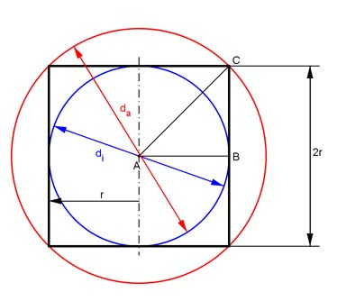

Aufgabe 320 Einem Zylinder mit dem Radius r und der Höhe 2r ist eine Kugel ein- und eine umbeschrieben. In welchem Verhältnis stehen ihre Volumina und ihre Oberflächen zueinander?  Volumen: Zylinder VZ = л * r² * h = л * r² * 2 * r = 2 * л * r³ Innere Kugel: 4 * r³ * л Vi = ------------- 3 Äußere Kugel: Satz von Pythagoras im Dreieck ABC: AC² = AB² + BC² AB = AC = r AC² = r² + r² = 2 * r²|√ AC = r * √2 = ra 4 * л * ra³ 4 * л * (√2 * r)³ 4 * л * 2 * √2 * r³ Va = ------------ = ------------------- = ----------------------- 3 3 3 8 * л * √2 * r³ Va = ------------------- 3 VZ 2 * л * r³ 1 2 ---- = ------------- = --- oder VZ : Vi = 1 : --- = 1 : 0,67 Vi 4 * r³ * л 2 3 ------------ --- 3 3 VZ 2 * л * r³ 1 4 * √2 ---- = ----------------- = ---------- oder VZ : Va = 1 : -------- = 1 : 1,886 Va 8 * л * √2 * r³ 4 * √2 3 ----------------- -------- 3 3 4 * r³ * л ------------ Vi 3 1 ---- = ------------------ = --------- oder Vi : Va = 1 : (2 * √2) = 1 : 2,828 Va 8 * л * √2 * r³ 2 * √2 ----------------- 3 VZ : Vi : Va = 1 : 0,67 : 1,886 Oberfläche: Zylinder: OZ = 2 * л * r * h + 2 * л * r² = 2 * л * r * 2 * r + 2 * л * r² OZ = 4 * л * r² + 2 * л * r² = 6 * л * r² Innere Kugel: Oi = 4 * л * r² Äu0ere Kugel: Oa = 4 * л * ra² = 4 * л * (√2 * r)² = 8 * л * r² OZ 6 * л * r² 1 2 ---- = ------------ = --- oder OZ : Oi = 1 : --- = 1 : 0,67 Oi 4 * л * r² 2 3 --- 3 OZ 6 * л * r² 1 4 ---- = ------------ = --- oder OZ : Oa = 1 : --- = 1 : 1,33 Oa 8 * л * r² 4 3 --- 3 Oi 4 * л * r² 1 ---- = ------------ = --- oder Oi : Oa = 1 : 2 Oa 8 * л * r² 2 OZ : Oi : Oa = 1 : 0,67 : 1,33